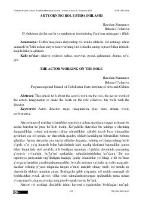

ARAktyorning rol ustida ishlashi va sahna obrazini yaratish jarayonidagi ijodiy izlanishlar.
Ushbu ilmiy-metodik maqolada aktyorning sahna obrazi ustida ishlash jarayoni, tasavvur va fantastikaning roli hamda rejissor bilan hamkorlik masalalari yoritilgan. Mualliflar qahramon xarakterini ochish, hayotiy muhitni o'rganish va rolga tayyorgarlik ko'rishning amaliy usullarini tahlil qilishadi. Maqola aktyorlik yo'nalishidagi talaba va ijodkorlar uchun mo'ljallangan.